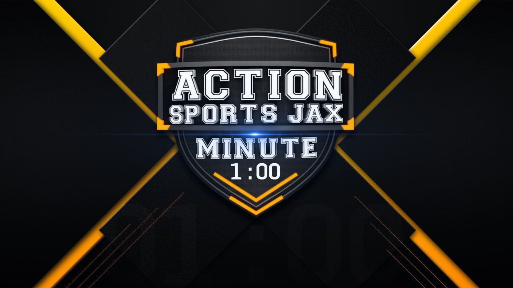

Final on-air logo lockup — modeled and rendered in Cinema 4D
A show identity for Action News Jax's daily sports highlights segment — a chrome-and-amber badge built to read instantly at broadcast size, whether it's filling a full bug or shrinking into a corner lower-third.
The mark was modeled and rendered entirely in Cinema 4D: a beveled steel shield, dimensional lettering, and a layered amber-and-graphite color story that reads athletic without leaning on any single team's colors — built to sit comfortably across every franchise the segment covers.
The logo anchors a full on-air campaign, extended into a motion graphics package, digital ads, and social assets, all built from the same dimensional language established here.